Liberty Vaughan is a strategic and playful product designer based in San Francisco, California.
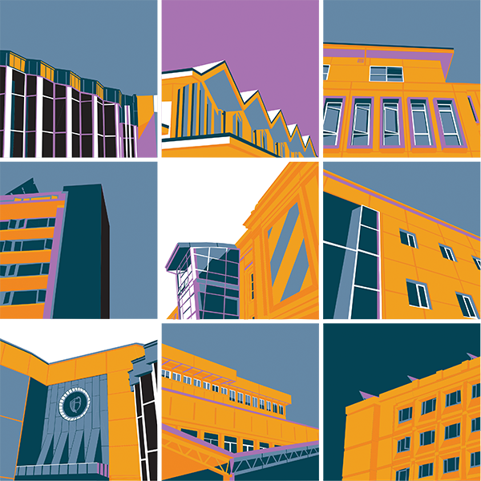
Architecture at the University of San Francisco
Adobe Illustrator + Epson Print, Fall 2022
The architecture on USF’s campus is shown in nine separate pictures with a twist on color and angles. The work consists of a maximum of five colors to express the natural architectural shapes and form from shadowing and contrast. Blues and oranges work well to create contrast and finding form was an important part of this project. This project was meant to show the beautiful parts of the buildings we see on campus and how we depict them through design.
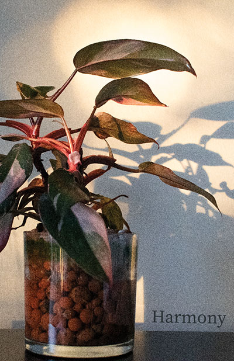
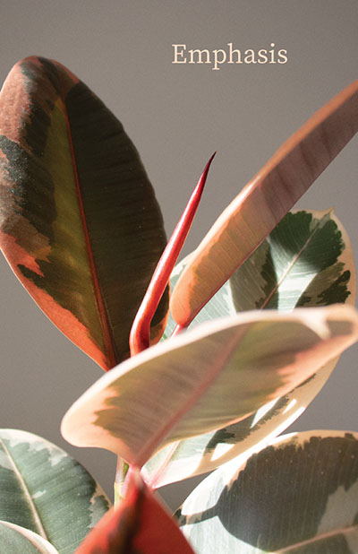
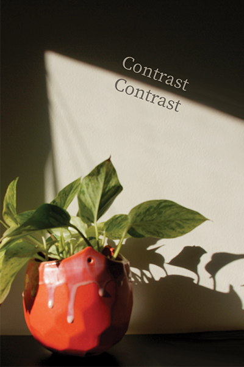
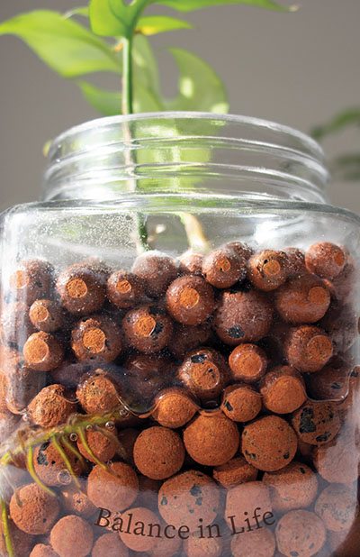
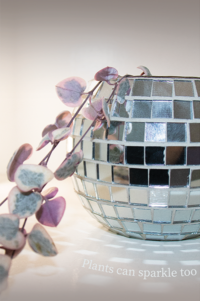
Picturing Design through Posters
Photographs + Epson Print, Fall 2022
Collection of photographs of my plants with words that connect to the photos. The plants are my pride and joy and photographing them took my idea of design to another level. Five photos of five different plants at various angles and lightings. The aesthetic was to highlight the plants and make them seem as if they belonged in a magazine. These five photos represent each aspect when designing, such as contrast, emphasis, and harmony.

Tattoo
Adobe Illustrator, Spring 2023
This tattoo was created for myself and the values that surround me. This piece consists of an orange slice that has three major landmarks in the areas I’ve lived in. The Golden Gate Bridge for San Francisco, an ocean wave for the California coast, my hometown’s mountains, the Topa Topas, and the orange groves grown in my hometown. The tattoo is supposed to be enticing, express contrast through negative space and show the design of placing four separate objects in one.
Three Icons
Adobe Illustrator, Spring 2023
Three designs for three different eras of the famous Cliff House in San Francisco. Each era has a different rendition and style to the building, but contains the same colors shown in my design. The Cliff House was a historical piece that had no attachment to art, making it the perfect thing to capture. These icons are to represent the historical significance of the Cliff House and show the distinct design and harmony throughout the icons.
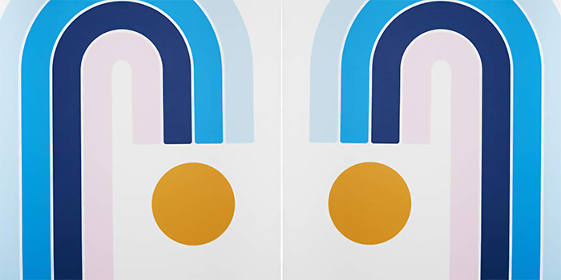
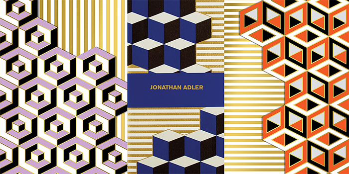
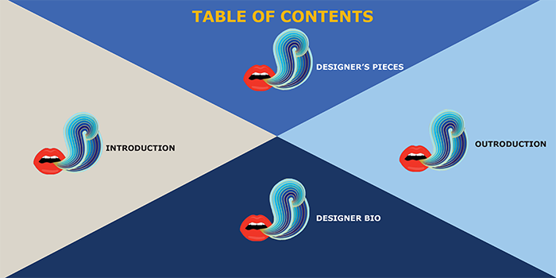
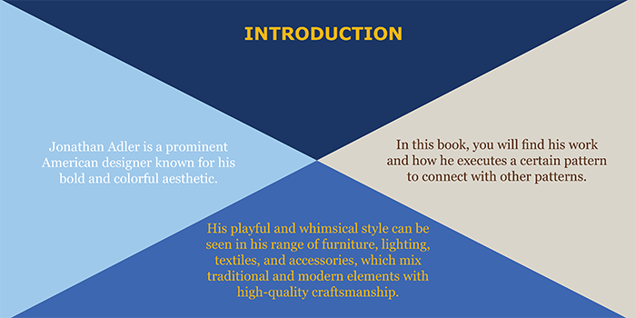
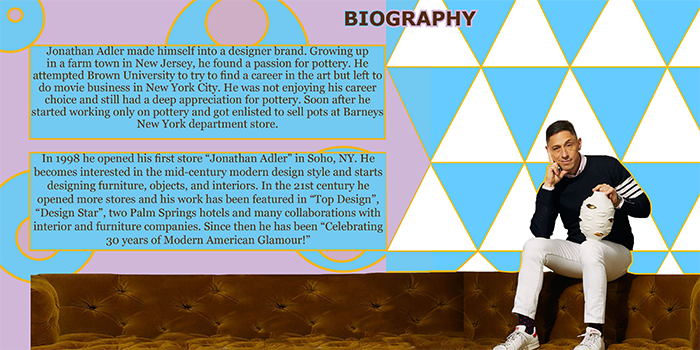
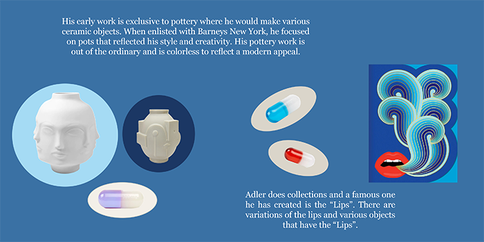
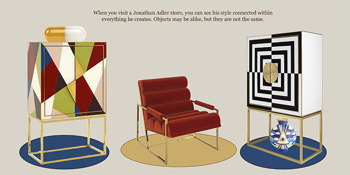
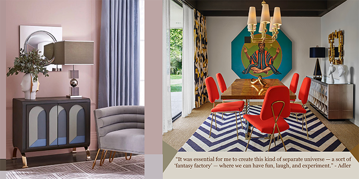
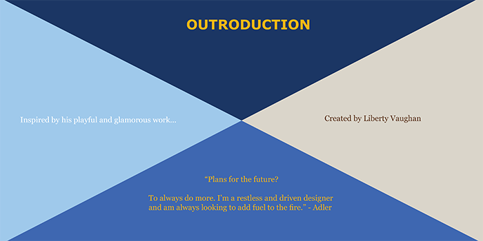
Designer Book
InDesign + Epson Print, Spring 2023
An accordion style book about a designer and their work with the purpose of design. This book is about Jonathan Adler who is a beloved product designer for his American glamor mid-century work that is seen in his stores. This book consists of 10 pages that have a theme surrounding the colors, textures and style of the designer’s work. The book is meant to express the designer’s style along with my own design style.